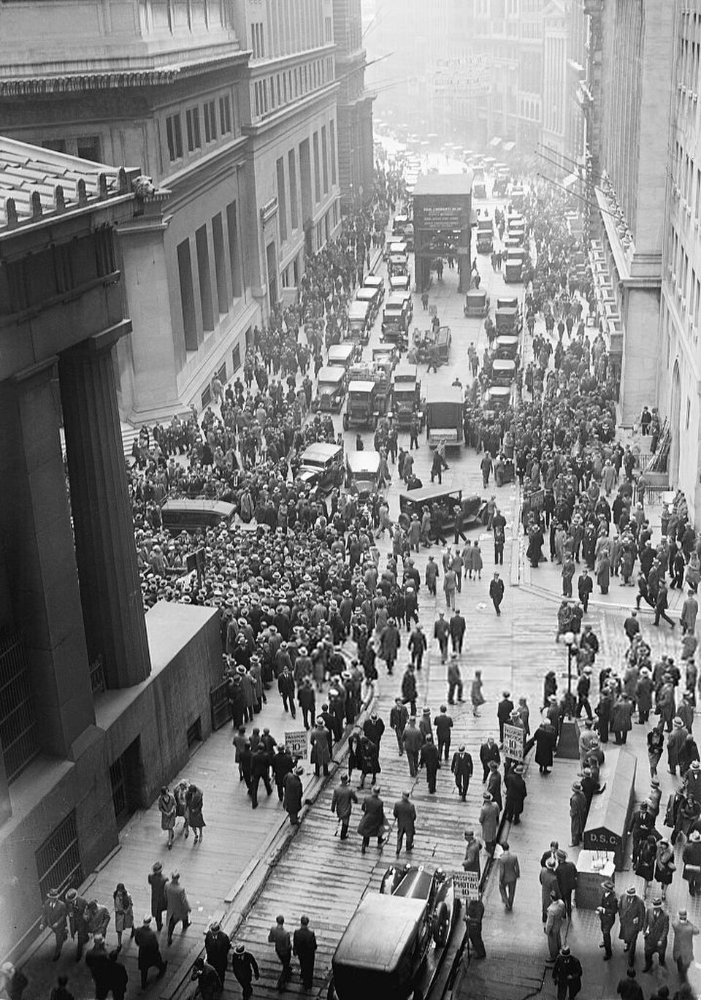

Jueves negro en Wall Street: se derrumban las acciones y la multitud rodea la Bolsa
Casi trece millones de títulos cambiaron de manos en la rueda más desesperada que se recuerde. Un consorcio de banqueros salió a comprar a viva voz para frenar la caída y devolvió una calma que nadie cree del todo.

La prosperidad que parecía no tener techo mostró hoy el piso. Desde la apertura, una avalancha de órdenes de venta arrasó la Bolsa de Nueva York: doce millones novecientas mil acciones en la jornada, tres veces lo que se consideraba un día febril, con la cinta telegráfica atrasada horas respecto de precios que caían sin encontrar comprador. En la calle, una multitud silenciosa se apretaba frente al templo de mármol de Wall Street, como se rodea la casa de un moribundo; adentro, corredores con el cuello desabrochado gritaban ventas de fortunas enteras.
A mediodía, los caballeros más poderosos de la banca americana —House of Morgan a la cabeza— se reunieron a puertas cerradas y despacharon al vicepresidente de la Bolsa, el señor Whitney, a escenificar el rescate: plantado en el puesto del acero, ofreció comprar U.S. Steel a diez puntos sobre el mercado, y repitió la ceremonia en una decena de títulos. El gesto, calcado del que dio vuelta el pánico de 1907, enderezó la tarde: buena parte de lo perdido se recuperó sobre el cierre, y los banqueros declararon que la liquidación fue «técnica», cosa de especuladores sobreextendidos y no de la salud del país.
La fiebre que hoy quebró venía de años y alcanzaba todos los bolsillos: se compraban acciones con el diez por ciento al contado y el resto prestado por el corredor, y los préstamos a los especuladores treparon a cifras sin precedente, alimentados por dinero que llegaba del mundo entero a buscar su parte del milagro. Se contaban historias de mucamas retiradas con fortunas y de títulos que doblaban su precio en meses, y el que advertía pasaba por aguafiestas: cuando el economista Babson pronosticó en septiembre «un crac terrorífico», la Bolsa lo castigó un día y lo olvidó al siguiente. Del limpiabotas que da datos bursátiles al banquero que los toma, la pirámide entera descansaba sobre una sola creencia: que mañana siempre paga más que hoy.
El día dejó estampas para la historia menuda. En la galería de visitantes, que las autoridades cerraron al mediodía, estuvo mirando el derrumbe un turista ilustre: el señor Winston Churchill, ex canciller del Tesoro británico, que algo sabe de números y difícilmente olvide lo que vio. Afuera corrieron rumores más veloces que la cinta: que once especuladores se habían arrojado ya por las ventanas —la policía lo desmiente, la ciudad lo repite—, y frente a cada pizarra se apiñaban señores pálidos haciendo cuentas con lápiz sobre el puño de la camisa. Los teléfonos de larga distancia quedaron saturados como no ocurría desde la guerra: medio país llamaba a la otra mitad para preguntar cuánto le quedaba.
Quiera el cielo que tengan razón. Pero millones de americanos comunes —tenderos, viudas, mucamas, ascensoristas— compraron acciones a crédito en estos años dorados, apostando sueldos que no tienen contra deudas que sí, y esos préstamos se están reclamando esta misma noche. Si la confianza no vuelve el lunes, lo de hoy habrá sido el ensayo y no la función. Los hombres serios de Washington aseguran que los negocios de la nación descansan sobre bases sólidas. Se les anota la frase, por si hay que recordársela.